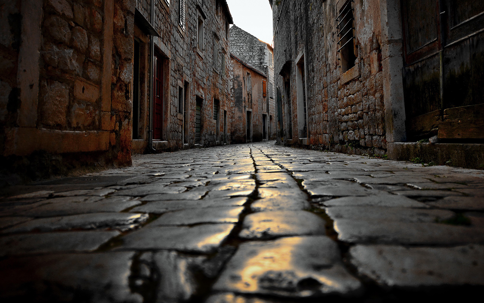

Trip to Croatia
Posted: 05 Mai 2016
these are the 10 facts
1) Croatia invented the necktie
2) It’s home to the “world’s most beautiful sunset
3) It’s home to King’s Landing (sort of)
4) It has the highest number of UNESCO Intangible Goods
of any European country (in a tie with Spain)
5) It’s home to the world’s smallest town
6) The location of dalmatians is Croatian
7) Their money is named after a rodent
8) Their coins are named after a lime tree
9) Um…it makes a lot of inaccurate claims
10) It’s the home of the world’s biggest truffle